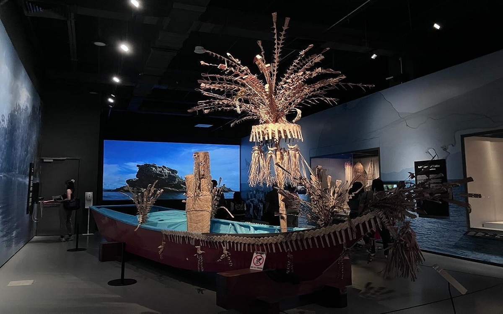

Nature and culture are not separate elements of Sarawak’s heritage. Repository of irreplaceable collections, the Borneo Cultures Museum aims to engage with new audiences through immersive environments and multisensory experiences that uncover the interconnections between land and peoples of Sarawak.
A narrative arc
for modern audiences
Interpretation of the peoples and cultures of Sarawak and their interactions with nature from the pre-history of Borneo up to the formation of the state of Malaysia in the 60’s is the experience storyline that linked together collections, new media and oral history. Visitors get to engage with Sarawak’s immemorial knowledge through a multisensorial experience scenario and learn how to protect and preserve Sarawak’s living legacy, its age-old traditions and unique biodiversity.
Dive into the History
The museum offers learning about the development of Sarawak through animation, as well as in-depth knowledge of the history of the region. The historical documents on display also give a vivid picture of Sarawak's history.

Brief History
One of the exhibits at the Borneo Cultural Museum is about the history of Sarawak. The exhibition takes visitors through key eras in Sarawak's history, including colonialism, political developments, local culture, and more.
The Moon Up
The Borneo Cultural Museum gives the public the opportunity to see the moon up close. The objective of organizing this exhibition also aims to provide exposure and knowledge to students of the Institute of Higher Education and school students about the moon.